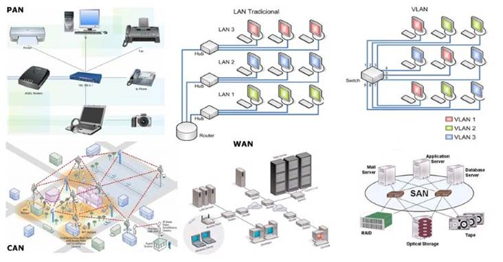

Las redes tecnológicas son un conjunto estructurado de dispositivos, sistemas y recursos informáticos que permiten el intercambio de información y comunicación entre ellos. Estas redes pueden ser clasificadas en distintos tipos de acuerdo con su alcance, estructura, topología, dinamismo y naturaleza. En el presente ensayo, se analizarán y describirán los principales tipos de redes tecnológicas que existen.
La primera clasificación que se puede hacer de las redes tecnológicas es según su alcance. En este sentido, se pueden distinguir tres tipos: las redes de área local (LAN), las redes de área extensa (WAN) y las redes de área personal (PAN).
Las redes LAN son aquellas que se utilizan en un espacio físico limitado, como una oficina, una casa o un edificio. En general, se caracterizan por ser de alta velocidad y bajo costo, y suelen utilizarse para compartir recursos informáticos, como impresoras, discos duros, servidores y datos. Las LAN se pueden conectar a Internet y a otras redes de mayor alcance, como las WAN.
Las redes WAN, por su parte, se utilizan para conectar distintas redes LAN a través de una extensa área geográfica, como una ciudad, un país o incluso varios países. En general, las WAN utilizan medios de comunicación como líneas telefónicas, satélites o cableados de fibra óptica, y se caracterizan por ser de baja velocidad y alto costo. Las WAN son la red que utilizan las empresas para comunicarse con sus distintas sucursales y filiales ubicadas en diferentes partes del mundo, y también son las que permiten la conexión de los diversos proveedores de servicios de Internet (ISP) a nivel mundial.
Por último, las redes PAN son aquellas que se utilizan en un espacio aún más pequeño que las LAN, como una habitación o un escritorio. Las PAN se caracterizan por ser de alta velocidad y bajo costo, y se utilizan para la conexión de dispositivos móviles, como teléfonos celulares, tabletas y auriculares inalámbricos.
Otra clasificación posible de las redes tecnológicas es según su estructura y topología. En este sentido, se pueden distinguir tres tipos: las redes de bus, las redes de estrella y las redes de anillo.
Las redes de bus se basan en un único canal de comunicación al cual se conectan todos los dispositivos, de manera que la información que se trasmita en la red llega a todos los dispositivos conectados al bus. Este tipo de red se caracteriza por ser sencilla y económica, pero también por tener problemas de congestión y de confiabilidad.
las redes de estrella, en cambio, se basan en un nodo central que actúa como punto de conexión y control de la red, y al cual se conectan los distintos dispositivos. En este caso, la información que se trasmita en la red solo llega a los dispositivos conectados al nodo central. Este tipo de red se caracteriza por ser más robusta y confiable que la de bus, aunque también es más costosa y menos flexible.
Por último, las redes de anillo se caracterizan por ser una estructura cerrada en la que cada dispositivo se conecta a los dispositivos vecinos formando un anillo. La información que se trasmita circulará por todo el anillo hasta llegar al dispositivo final de destino. Esta estructura se caracteriza por ser eficiente y de alta velocidad, aunque también es complicada de manejar y controlar.
Otra clasificación posible de las redes tecnológicas es según su dinamismo y flexibilidad. En este sentido, se pueden distinguir dos tipos: las redes estáticas y las redes móviles.
Las redes estáticas son aquellas que tienen una estructura fija y no cambian en el tiempo, como las redes LAN o WAN que se utilizan en las empresas. Estas redes se caracterizan por ser más confiables y seguras que las redes móviles, aunque también son menos flexibles y poco adaptables a los cambios.
Por su parte, las redes móviles se caracterizan por ser dinámicas y adaptables a las necesidades de los usuarios y de los dispositivos. Estas redes son utilizadas en la actualidad por los sistemas de comunicación inalámbrica, como el Wi-Fi, la conexión a Internet móvil o los sistemas satelitales. Las redes móviles se caracterizan por ser muy versátiles y flexibles, aunque también son más inestables y menos confiables que las estáticas.
Por último, otra posible clasificación de las redes tecnológicas es según su naturaleza y función. En este sentido, se pueden distinguir dos tipos: las redes públicas y las redes privadas.
Las redes públicas son aquellas que están disponibles para cualquier persona y se utilizan con fines de comunicación pública, como las redes de datos, de voz o de televisión. Estas redes se caracterizan por ser de alto tráfico y diversidad, y suelen estar controladas por los proveedores de servicios de Internet o de comunicación.
Por otro lado, las redes privadas son aquellas que se utilizan en un ámbito limitado y controlado por una empresa o institución. Estas redes se caracterizan por ser de alto control, seguridad y confidencialidad, y se utilizan para compartir información, recursos y servicios de forma interna entre los distintos departamentos de una empresa o institución.
En conclusión, existen diversos tipos de redes tecnológicas que se pueden clasificar según distintos criterios como su alcance, estructura, topología, dinamismo y naturaleza. Cada tipo de red tecnológica tiene ventajas y desventajas según su uso y objetivo, por lo que es importante elegir la adecuada en función de las necesidades de cada empresa o individuo.